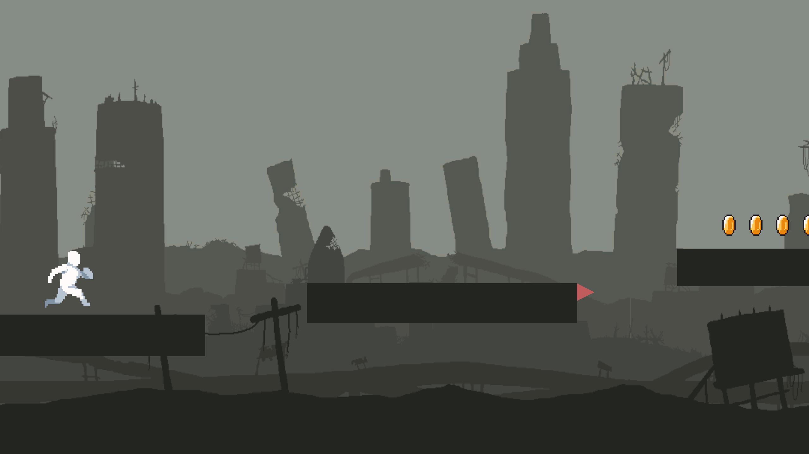

Détails du projet : Runner

Ce jeu a été créé en C# avec Unity.
Pour m'aider à le réaliser, j’ai suivi une formation Udemy d’une 10aine d'heures sur la création d'un jeu similaire
Technologies utilisées :
Programmation en C#
Unity
Difficultés rencontrées :
Apprendre à gérer un moteur lourd
Créer une interface
Gérer la physique d'un jeu en 2D (surtout avec une vitesse qui augmente)
Dates :
Réalisé entre juin et août 2025
Voir sur GitHub